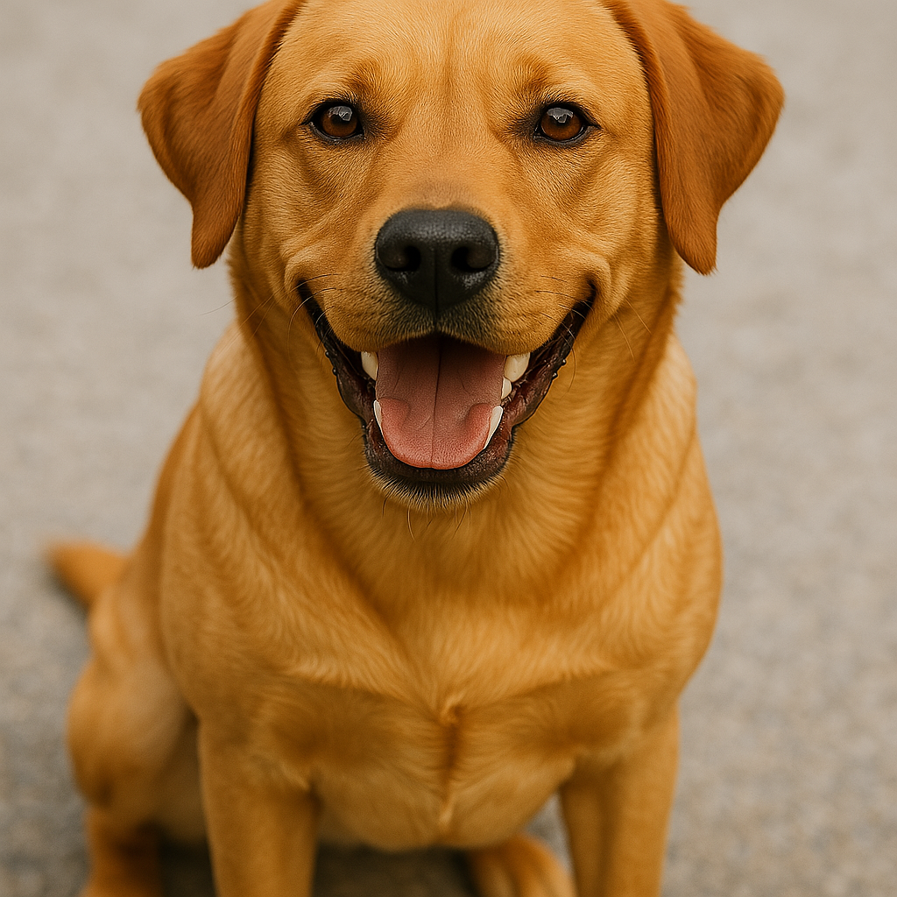
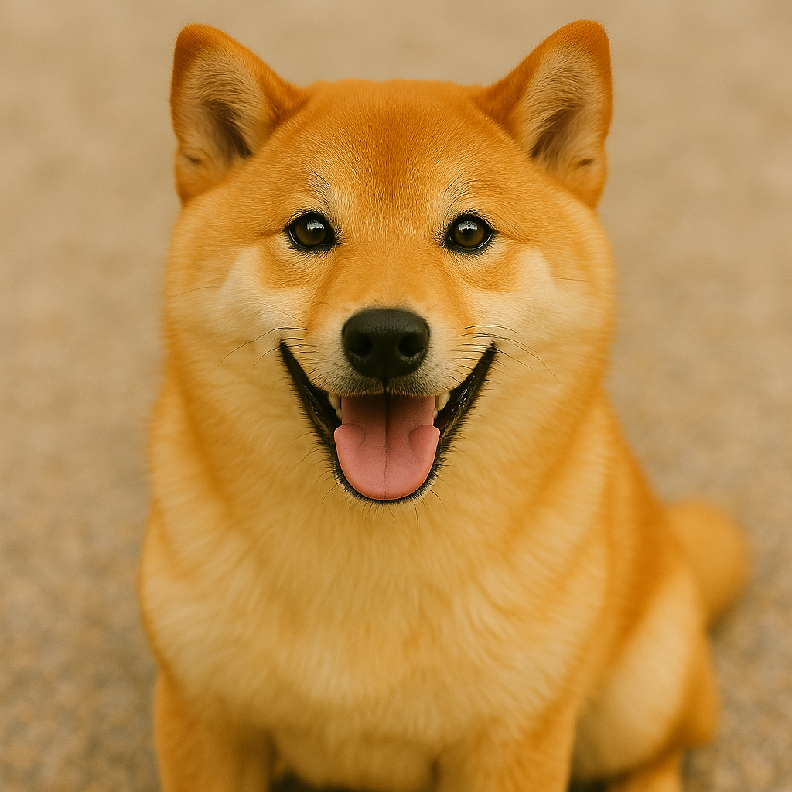

犬

犬の基本情報
学名
Canis lupus familiaris
寿命
小型犬で約12～16年、大型犬で約10～13年ほどです。
体重
豆柴などの超小型犬は2kg程度、グレート・デーンなどの大型犬は70kg以上になることもあります。
犬の性格・特徴
性格
好奇心旺盛、社会性が高い、人に懐きやすい種が多いです。
知能
しつけやトレーニングができるほど知能が高く、人とのコミュニケーションも豊かです。
トイレのしつけ
比較的簡単で、決まった場所で排泄できるようになります。
代表的な種類
小型犬
トイプードル
巻き毛が特徴で、抜け毛が少なく、アレルギーを持つ人にも人気。
チワワ
世界最小の犬種。大きな目と耳が特徴的です。
ミニチュアダックスフンド
胴長短足のユニークな体型。
中型犬

柴犬
日本原産の犬種で、巻き尾と立ち耳が特徴的。
コーギー
胴長短足で、愛らしい外見。イギリス王室でも人気があります。
ビーグル
嗅覚が優れていて、元々狩猟犬。三角形の耳が特徴。
大型犬
ゴールデンレトリバー
穏やかで人懐っこく、賢いことで知られる大型犬。
シベリアンハスキー
力強い体と美しいブルーの目が特徴的な作業犬。
グレートデーン
「犬の中の巨人」と呼ばれるほど大型で優雅な犬種。